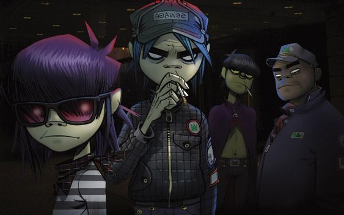
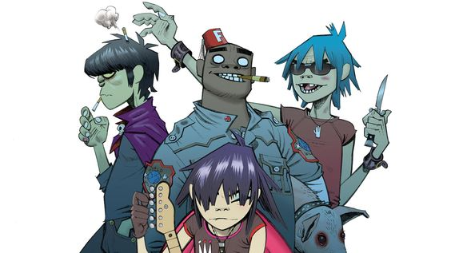

Introdução
Gorillaz é uma banda virtual britânica criada em 1998 pelo músico Damon Albarn e pelo artista Jamie Hewlett. A banda é conhecida por sua música que mistura diversos gêneros e por sua identidade visual única, caracterizada por personagens animados.

Formação e Primeiros Anos (1998-2000)
Damon Albarn, conhecido por seu trabalho como vocalista da banda Blur, e Jamie Hewlett, co-criador da história em quadrinhos "Tank Girl", formaram a Gorillaz como uma forma de explorar novas direções musicais e artísticas. Eles desenvolveram quatro personagens animados que serviriam como a "face" da banda: 2D (vocalista), Murdoc Niccals (baixista), Noodle (guitarrista) e Russel Hobbs (baterista).
Sucesso Inicial e Álbum de Estreia (2001)
O álbum de estreia autointitulado "Gorillaz" foi lançado em 2001 e foi um sucesso imediato, impulsionado pelo single "Clint Eastwood". O álbum vendeu mais de 7 milhões de cópias mundialmente, estabelecendo a banda como uma força inovadora na música.
"Demon Days" e Reconhecimento Mundial (2005)
O segundo álbum de estúdio, "Demon Days", foi lançado em 2005 e recebeu aclamação da crítica. Incluiu sucessos como "Feel Good Inc.", "DARE", e "Dirty Harry". O álbum abordou temas como a guerra e o meio ambiente e vendeu mais de 8 milhões de cópias. "Feel Good Inc." ganhou um Grammy Award, consolidando ainda mais a popularidade da banda.
Período de Hiato e "Plastic Beach" (2010)
Após "Demon Days", Albarn e Hewlett se concentraram em outros projetos. A banda voltou em 2010 com "Plastic Beach", um álbum que contou com diversas colaborações de artistas como Snoop Dogg, Lou Reed e Mos Def. O álbum abordou temas ambientais e foi bem recebido pela crítica.

"The Fall" e Novos Projetos (2011-2015)
Em 2011, Gorillaz lançou "The Fall", um álbum gravado durante a turnê americana da banda. Este álbum foi mais experimental e recebeu uma recepção mista. Após o lançamento de "The Fall", a banda entrou em um hiato novamente, enquanto Albarn e Hewlett trabalhavam em projetos individuais.
Retorno com "Humanz" e "The Now Now" (2017-2018)
Gorillaz retornou em 2017 com o álbum "Humanz", que contou com uma grande variedade de colaborações e abordou temas políticos e sociais contemporâneos. Em 2018, a banda lançou "The Now Now", um álbum mais introspectivo e com menos colaborações.